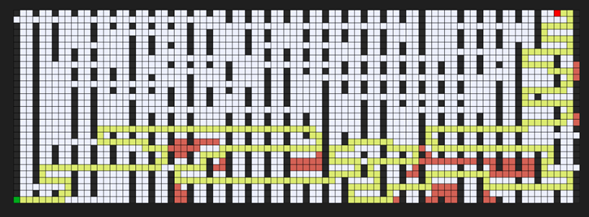
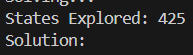
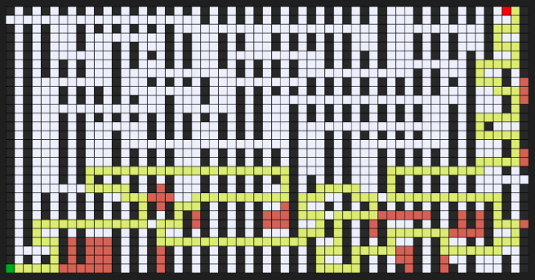
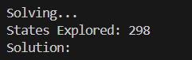
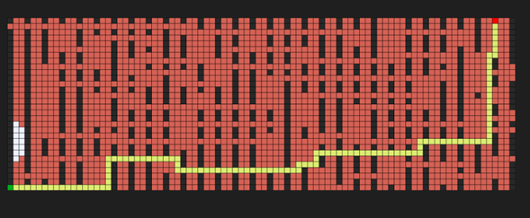
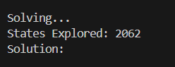
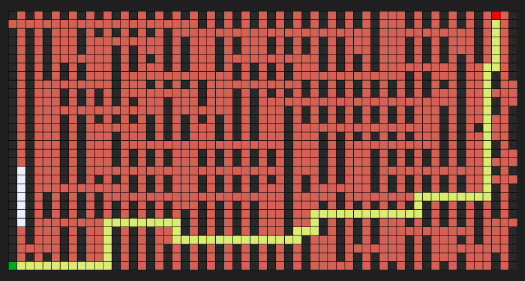
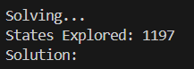

La ciberseguridad es fundamental para proteger sistemas informáticos contra ataques y accesos no autorizados. Incluye la implementación de medidas de seguridad como el cifrado, las autenticaciones robustas y la protección contra malware. Además, se enfoca en la detección y respuesta a incidentes, así como en la capacitación de usuarios para evitar riesgos.
La ciberseguridad también abarca el cumplimiento de normativas y estándares internacionales para garantizar la seguridad de los datos y la privacidad de los usuarios. Es un campo en constante evolución, dado el crecimiento de las amenazas y vulnerabilidades tecnológicas.
La computación en la nube proporciona recursos de TI a través de internet, permitiendo a las empresas y usuarios utilizar servidores, almacenamiento y aplicaciones sin necesidad de infraestructura física propia. Los principales modelos de servicio son IaaS (Infraestructura como Servicio), PaaS (Plataforma como Servicio) y SaaS (Software como Servicio).
Entre sus beneficios se incluyen la escalabilidad, la reducción de costos operativos y la flexibilidad en la gestión de recursos. Los principales proveedores de servicios en la nube como Amazon Web Services (AWS), Microsoft Azure y Google Cloud Platform ofrecen soluciones adaptadas a diferentes necesidades empresariales.
La inteligencia artificial (IA) se centra en desarrollar sistemas que imitan la inteligencia humana para realizar tareas como el reconocimiento de patrones, la toma de decisiones y el aprendizaje automático. La IA se divide en dos categorías principales: IA débil, que se especializa en tareas específicas, y IA fuerte, que aspira a tener una comprensión y razonamiento general similar al humano.
La IA está revolucionando diversas industrias al automatizar procesos, mejorar la eficiencia operativa y permitir el análisis avanzado de grandes volúmenes de datos. Aplicaciones comunes incluyen asistentes virtuales, sistemas de recomendación y vehículos autónomos.
| Laberinto 1 | Resultado |
|---|---|
|  |  |
| Laberinto 2 | Resultado |
|---|---|
|  |  |
| Laberinto 1 | Resultado |
|---|---|
|  |  |
| Laberinto 2 | Resultado |
|---|---|
|  |  |
celsius = np.array([-40, -10, 0, 8, 15, 22, 38], dtype=float) / / / Datos de entrada en grados Celsius
fahrenheit = np.array([-40, 14, 32, 46, 59, 72, 100], dtype=float) / / / Datos de salida en grados Fahrenheit
oculta1 = tf.keras.layers.Dense(units=3, input_shape=[1]) / / / Capa oculta 1 con 3 neuronas, entrada de tamaño 1
oculta2 = tf.keras.layers.Dense(units=3) / / / Capa oculta 2 con 3 neuronas
salida = tf.keras.layers.Dense(units=1) / / / Capa de salida con 1 neurona
modelo = tf.keras.Sequential([oculta1, oculta2, salida]) / / / Modelo secuencial con 2 capas ocultas y 1 de salida
modelo.compile(
optimizer=tf.keras.optimizers.Adam(0.1), / / / Optimizador Adam con tasa de aprendizaje 0.1
loss='mean_squared_error' / / / Función de pérdida: error cuadrático medio
)
print("Comenzando entrenamiento...")
historial = modelo.fit(celsius, fahrenheit, epochs=1000, verbose=False) / / / Entrena el modelo durante 1000 épocas
print("Modelo entrenado!")
import matplotlib.pyplot as plt
plt.xlabel("/ / / Epoca")
plt.ylabel("Magnitud de pérdida")
plt.plot(historial.history["loss"]) / / / Gráfica de la pérdida a lo largo de las épocas
print("Hagamos una predicción!")
resultado = modelo.predict([100.0]) / / / Realiza una predicción para 100 grados Celsius
print("El resultado es " + str(resultado) + " fahrenheit!")
print("Variables internas del modelo")
print(oculta1.get_weights()) / / / Muestra los pesos de la primera capa oculta
print(oculta2.get_weights()) / / / Muestra los pesos de la segunda capa oculta
print(salida.get_weights()) / / / Muestra los pesos de la capa de salida